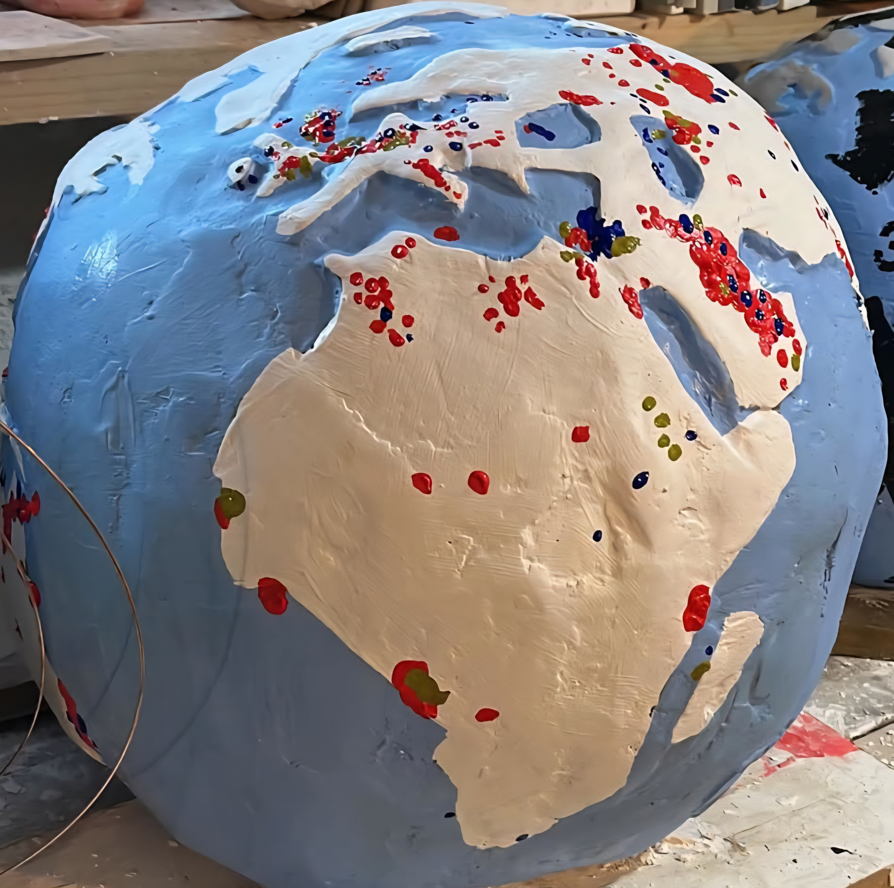
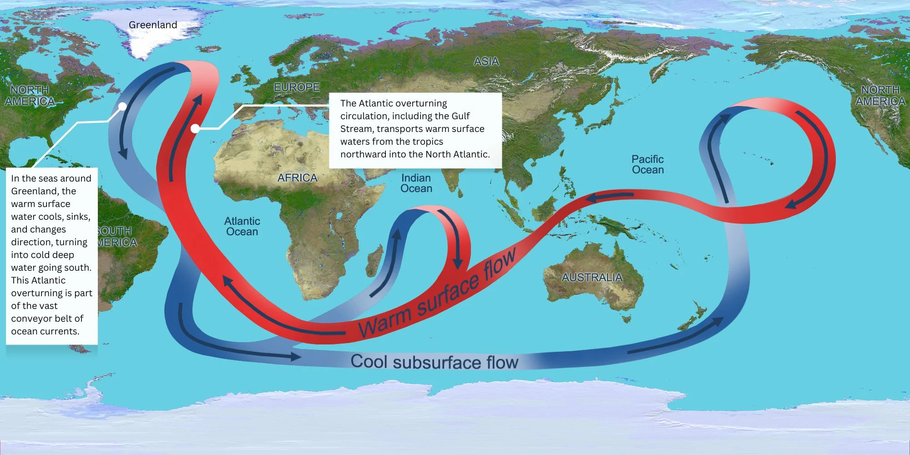
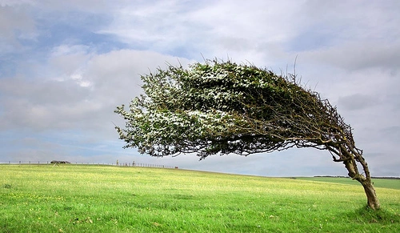
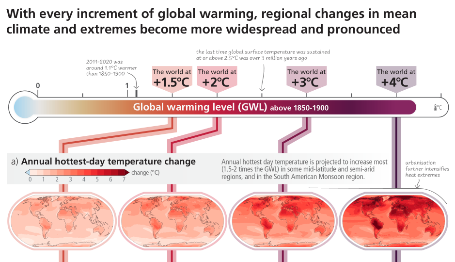
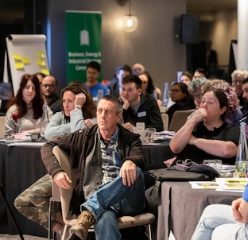

9 Earths
9 Earths


Earth’s atmosphere is a layer of gases that surrounds our planet. Some of these gases, like carbon dioxide and methane, trap heat from the sun. This makes the planet warm enough to live on. This is like how a green house keeps plants warm, so we call this the greenhouse effect. Today, human activities are adding too much greenhouse gas to the atmosphere. This is trapping too much heat, disrupting the Earth’s natural balance and leading to climate change.
Learn more
Burning fossil fuels like coal, oil and gas for energy is the main cause of climate change, because of the heat-trapping gases this releases. It also makes the air unsafe to breathe. Already, millions of people around the world die each year because of breathing in polluted air from cars, power plants and gas boilers. Even though we can use renewable energy instead, many governments and businesses still want to keep digging up coal, oil and gas for another thirty years.
Learn moreThe emissions from one flight from Manchester to Barcelona are three times higher than driving a diesel car 10,000 miles. Today there are no passenger airplanes that run on renewable technology like batteries or hydrogen (though research is being conducted in this area). For the moment, it is much better to fly less or avoid flying and take public transport instead.
Learn more
The Atlantic Meridonal Overturning Circulation (AMOC) is an ocean current that helps to control heat around the planet It is in danger of collapse, which would cause major weather problems for different countries. In the UK the sea level would rise rapidly; the country would be 30C colder on average; and rainfall would drop sharply.
Learn more
Imagine you push a boulder to the very top of a hill. If it started to roll down the other side, do you think you could stop it from rolling away from you? Probably not. This is how ‘tipping points’ work. This earth shows nine tipping points we are approaching, including in the Amazon rainforest, which is home to a mind-boggling number of different kinds of plants, animals, fungi, and humans. Already, farmers are burning and cutting down large parts of the rainforest to make space for cows and crops. Today, about 18% of the forest has been destroyed. If we reach 20% or 25%, the whole rainforest will stop working - it will dry out and huge areas will burn, releasing a terrifying amount of carbon dioxide, making climate change much worse. This will dry out the forest even more. In other words, the boulder will roll down the other side of the hill.
Learn more
Scientists believe that we are entering a time where a huge proportion of living things are becoming extinct. Millions of years ago dinosaurs and many animals, plants and fungi died out due to a massive asteroid hitting the earth. This time it’s humans causing the damage: climate change, industrial farming and the destruction of wilderness.
Learn more
Today, the Earth is around 1.4 degrees hotter than in 1990. At 1.5 degrees, scientists predict that ten times more people will die from extreme heat across the world. In some places this will lead to droughts and water shortages, and famines will become common. In other places, floods will force people out of their homes. As forests around the world shrink and disappear, far more plants and animals will go extinct. Wildfires will burn in more parts of the earth.
Learn about the earth at 1.5 C Learn about the earth at 3 C Learn about the earth at 4 CIn 2020, a group of MPs in the UK parliament commissioned a Citizens’ Assembly - a cross section of the public. Tens of thousands of people were invited at random. 108 people who responded were then selected, so that the group was representative of the whole UK population in terms of age, gender, ethnicity, education level, location, and their level of concern about climate change. The assembly heard balanced, accurate and comprehensive information from experts about the climate criss and how the UK could meet its net zero 2050 target. They deliberated the best way forward, before voting on a set of recommendations.
